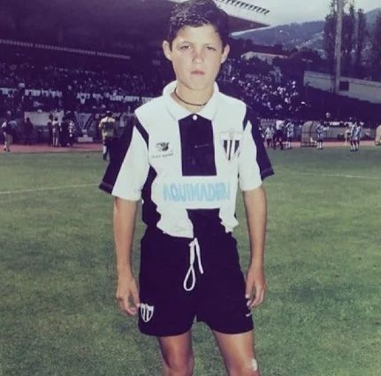
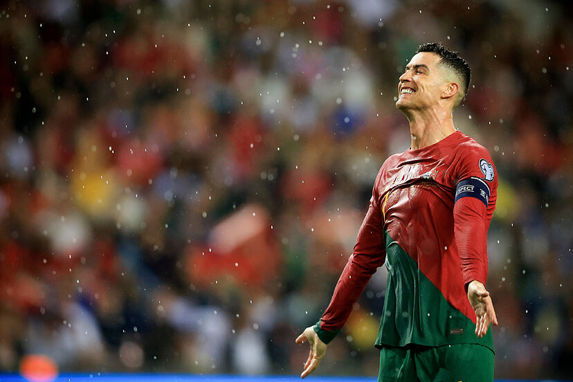

Biografía
Cristiano Ronaldo, nacido el 5 de febrero de 1985 en Portugal, es un futbolista de renombre mundial. Ha jugado en clubes como el Manchester United, el Real Madrid y la Juventus, ganando numerosos títulos, incluyendo la UEFA Champions League. También ha destacado con la selección nacional de Portugal, liderándola hacia la victoria en la Eurocopa 2016 y la Liga de Naciones de la UEFA 2019. Ronaldo es conocido por su dedicación, habilidad excepcional y su impacto tanto dentro como fuera del campo.
Trayectoria
Selección Portuguesa
Categorías inferiores y primeros torneos internacionales (2001-2007)
Ronaldo inició su carrera internacional en las selecciones juveniles de Portugal, destacando especialmente en la Eurocopa Sub-21 de 2003, donde ganaron el Torneo Esperanzas de Tolón. Debutó con la selección absoluta en 2003 y se destacó en la Eurocopa 2004, donde anotó su primer gol en un torneo internacional y fue incluido en el Equipo del Campeonato.
Asumiendo la capitanía y años difíciles (2007-2012)
En 2007, Ronaldo asumió la capitanía de Portugal y participó en la Eurocopa 2008, aunque no pudo repetir el éxito de la edición anterior. Durante las eliminatorias para el Mundial de Sudáfrica 2010, tuvo un papel crucial en llevar a Portugal a la fase final, pero el equipo fue eliminado en los octavos de final.
Máximo goleador histórico de Portugal y campeón de Europa (2012-2016)
En esta etapa, Ronaldo se consolidó como el máximo goleador histórico de Portugal y lideró al equipo a la victoria en la Eurocopa 2016, donde fue fundamental en la final a pesar de una lesión temprana.
Post-campeonato de Europa y Mundial (2016-2018)
Después de la Eurocopa 2016, Ronaldo continuó siendo una figura clave para Portugal en las eliminatorias para la Copa del Mundo 2018, donde se destacó con un hat-trick en un partido contra España.
Nations League y 100 goles internacionales (2018-2020)
Ronaldo lideró a Portugal en la Liga de las Naciones de la UEFA 2018-2019, llevándolos al título. También continuó su impresionante carrera goleadora, superando varios récords internacionales, incluyendo alcanzar los 100 goles con la selección nacional.
Máximo goleador de la historia de Selecciones y presente (2021-act.)
En los últimos años, Ronaldo ha seguido siendo un pilar para Portugal, destacando en la Eurocopa 2020 al convertirse en el máximo goleador de todos los tiempos en la historia del torneo y estableciendo nuevos récords goleadores a nivel internacional.
Estadísticas y Palmarés
| Partidos | Goles | Asistencias | Media Goleadora |
|---|---|---|---|
| 1204 | 873 | 262 | 0.73 |
- Jugador Mundial de la FIFA: 3
- Balón de Oro: 5
- Mejor Jugador de Europa: 4
- Mejor Futbolista del año:14
- Premio Puskás: 1
- Máximo Goleador: 19
- Eurocopa: 1
- Nations League: 1
- Champions League: 5
- Mundial de Clubes: 4
- Premier League: 3
- La Liga: 2
- Serie A: 2
Mejores Momentos
Formulario de Admisión
¡Únete a nuestro grupo y no te pierdas ni una noticia de nuestro ídolo!
Links Importantes